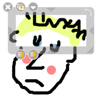

Handwritten strokes created with the stylus or the markers are now considered as objects just as images, texts, …
Therefore, they benefit from the same properties as the other objects which means that you can now move them, modify their size, rotate, apply a symmetry, group them and add an action.
